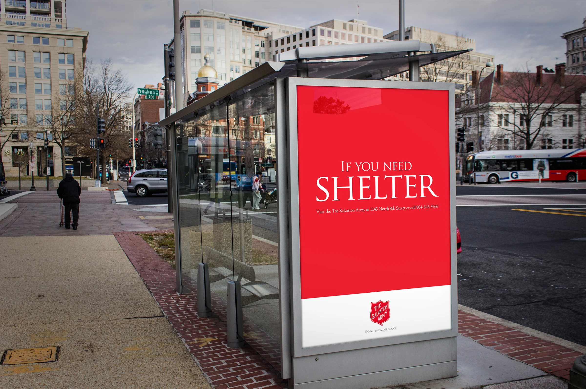
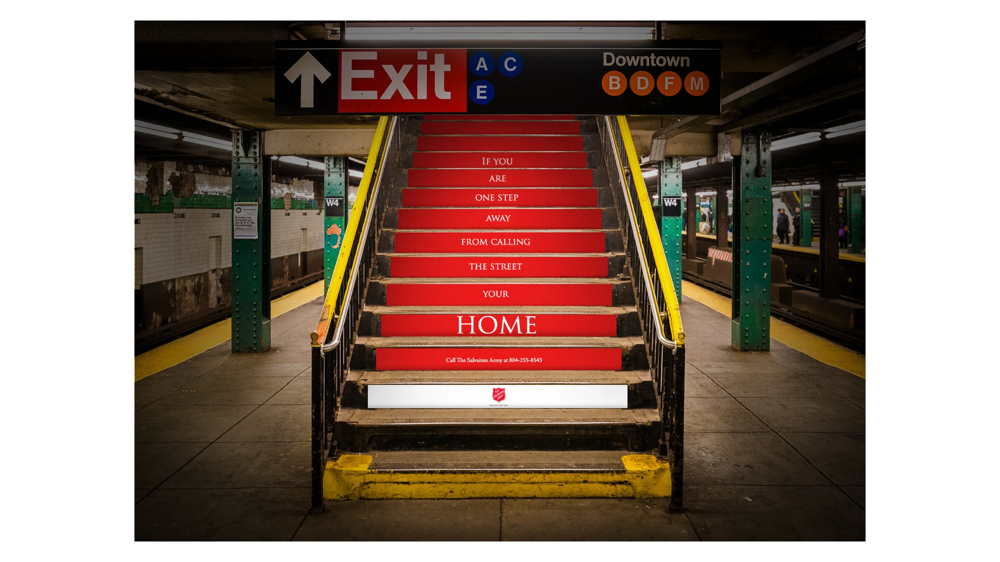
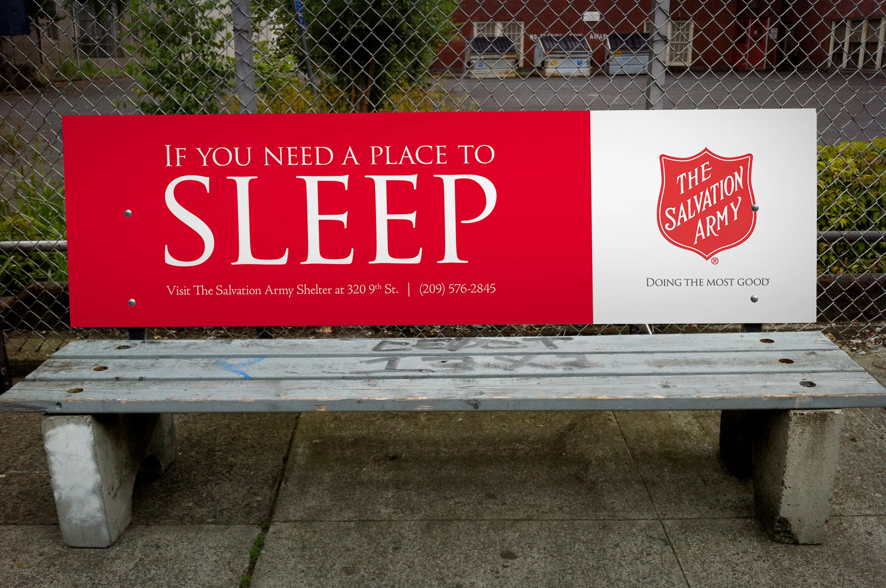
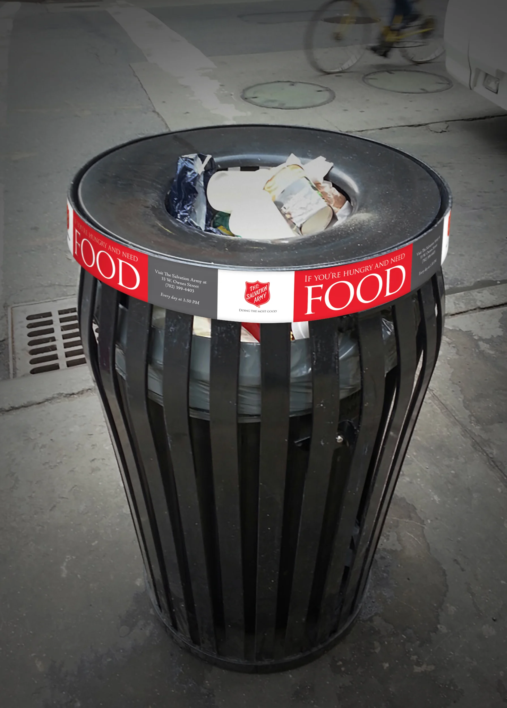
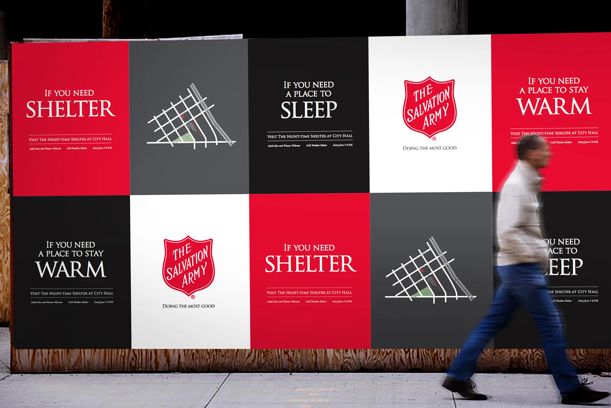
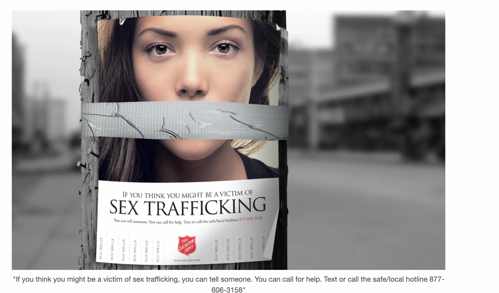
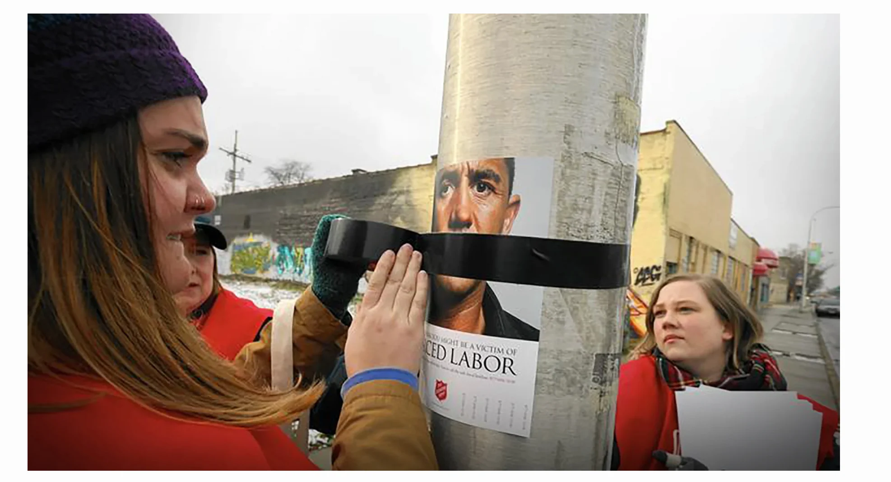

Signs of Hope
Turning the city itself into a wayfinding system for people who need food, shelter and hope.

The problem
Most Salvation Army advertising speaks to donors. This campaign needed to speak directly to people in need—and help them find real assistance in the places where they were already looking.
The idea
Make the media useful. Shelter messages lived at bus shelters. Food messages wrapped trash cans. The placement completed the thought.
The impact
The campaign launched in major cities including Denver, Las Vegas, Chicago and Seattle. The original portfolio reports a dramatic increase in traffic through shelter and feeding programs, while also giving donors a visible sense of the organization’s local reach.





